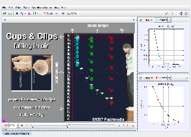

Tracker Experiment
This video shows a set of cupcake cups dropped from rest. The cups have paper clips attached to give them mass and stability.
Here the motions of three cups are compared with particle models that assume air resistance is a drag force (depends on v2). The equations and parameters are identical for all three models--only the cup masses differ.
Analysis:
- Right-click the mass 4 model, choose "Model Builder" and study the force functions. What forces act on the particle and in what directions?
- Identify and name the parameters in the model. Which one(s) affect the viscous force? Select one of these to adjust. Verify that its "Synced" box is checked so that changes to it will apply to all other synced particles.
- Double-click the expression cell for your parameter and adjust the value by entering directly or dragging the mouse in the green area of the editor. How closely can you get the model to match the real cup's position in every step? Zoom in to compare closely.
- Verify the equations and parameter values in the mass 8 model. Is the mass correct? How well does the model match the falling cup? Can you improve the match by adjusting your parameter? Does this require large adjustments?
- Repeat for the mass 1 model. Can you get all three models to match fairly well?
- Pick another mass cup to model. Choose Track|Clone|mass 4 to make a new particle, then rename it appropriately. In the model builder, set its mass and initial position. Does it match the cup?
- Discuss whether this experiment supports a drag model of air resistance.
Author: Douglas Brown
Contact: dobrown@cabrillo.edu